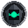

Официальный бесплатный туннель Cloudflare WARP. Открывает любые заблокированные HTTPS-сайты (Wikipedia, YouTube и др.) без ограничений скорости.
warp-cli mode proxy && warp-cli connect
Подключение к вашему персональному или бесплатному SOCKS5/HTTPS прокси.
⚠️ Ограничение CDN: Cloudflare Workers блокируют метод CONNECT, из-за чего прямое открытие HTTPS-сайтов недоступно. Используйте режим WARP или SOCKS5.